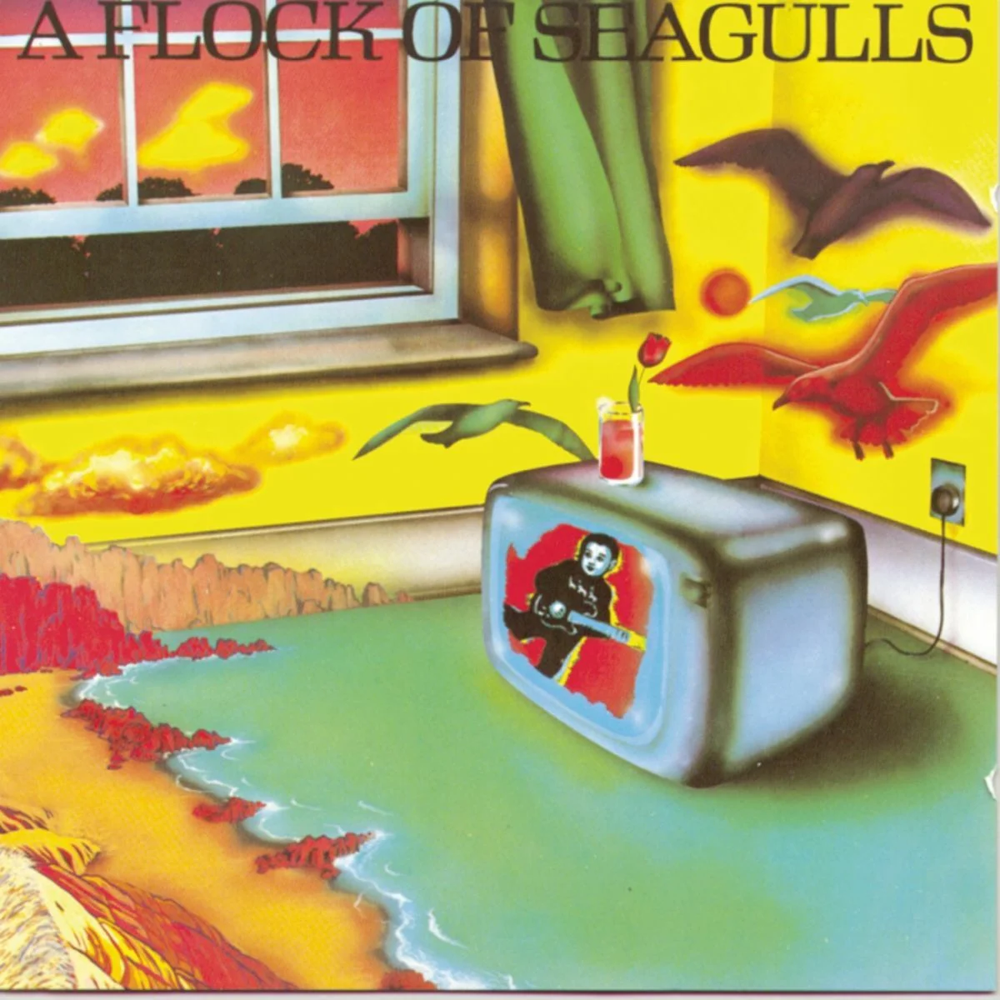
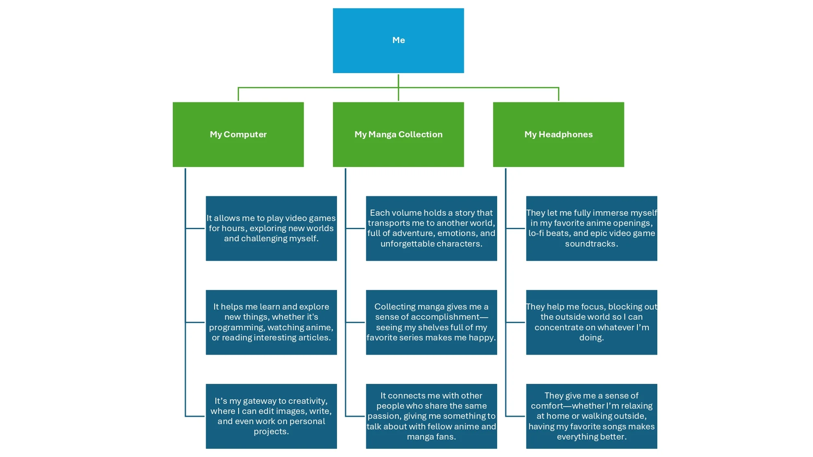
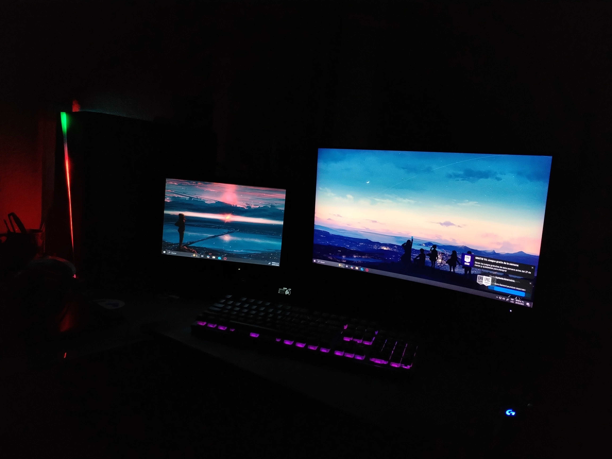
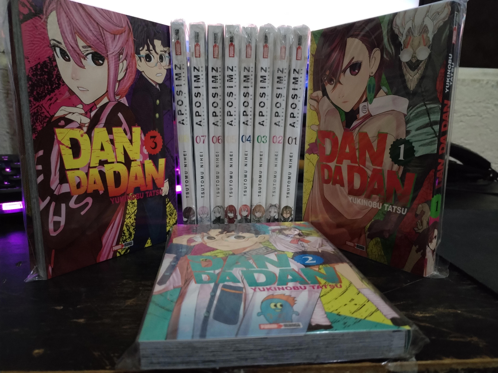
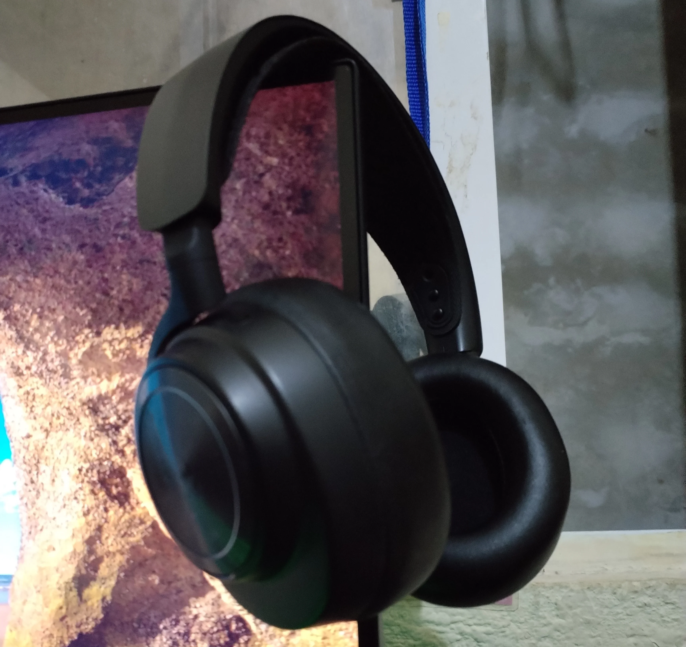

Me in Three Objects

Objects can tell a lot about a person. If I had to choose three items that represent me, they would be my computer, my manga collection, and my headphones. Each of these objects reflects a part of who I am and what I love.

My Computer
- My computer is, without a doubt, one of the most important things I own. It is my main source of entertainment, allowing me to spend hours playing video games and immersing myself in incredible virtual worlds. But beyond gaming, my computer is also a tool for learning. Whether I'm watching anime, reading interesting articles, or even exploring programming, it helps me expand my knowledge and develop new skills. It also serves as a creative outlet, where I can edit images, write, and work on personal projects. In many ways, my computer is my connection to everything I love.

My Manga Collection
- Another object that represents me is my manga collection. I have been passionate about manga for years, and every volume I own is a piece of a story that has transported me to another world. These stories are filled with adventure, deep emotions, and unforgettable characters that have left a mark on me. Beyond just reading, collecting manga gives me a sense of accomplishment—there’s something satisfying about seeing my shelves full of my favorite series. Additionally, it connects me with other people who share the same passion, whether it's through discussions, recommendations, or simply geeking out over a great series.

My Headphones
- Finally, my headphones are an essential part of my daily life. Music, anime openings, lo-fi beats, and video game soundtracks are always with me, helping me focus and enjoy every moment. With my headphones on, I can block out the noise of the world and fully immerse myself in whatever I'm listening to. They also provide comfort—I enjoy putting them on, disconnecting from distractions, and simply relaxing. Whether I’m working, gaming, or just unwinding, my headphones make everything better.
These three objects might seem simple, but they represent who I am. My computer fuels my curiosity and creativity, my manga collection keeps me connected to the stories I love, and my headphones let me dive into my own world. Together, they shape my daily experiences and reflect the things that make me happy.